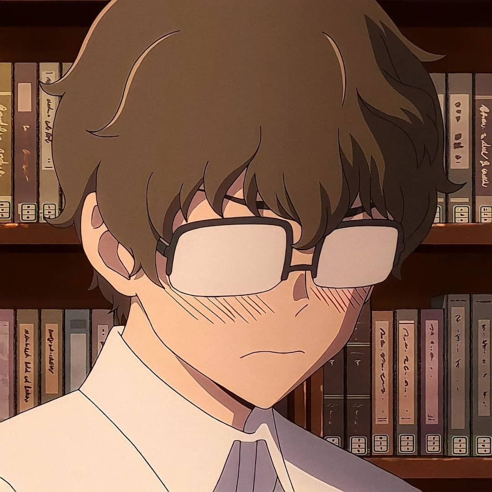

Naoto Hachiouji - Animepédia

- Gênero
- Aniversário
- Altura
- Cor do Cabelo
- Cor do Olhos
Personalidade
Senpai é um colegial muito alto, desajeitado e anguloso, com um queixo bem definido e cabelos
castanhos encaracolados, muitas vezes comparados a lã de ovelha. Ele tem uma pele extremamente pálida e delicada -
tanto que fica queimado de sol facilmente - e olhos castanhos afiados e propensos a contrair-se. Ele é míope e sempre
usa um par de óculos de aro de chifre, embora possa ver um pouco decentemente mesmo sem eles e depois começar a usar lentes.
Muitas vezes descrito como um "broto de feijão", Senpai é esbelto, incrivelmente fraco e tem um físico ósseo, seco, magro e muito inflexível,
com seus braços tão finos que poderiam ser contidos no aperto de uma garota, mas peitorais relativamente definidos. Nagatoro frequentemente o chama de "nojento",
mas ele é realmente decentemente bonito e tanto a garota quanto seus amigos mostraram achá-lo bastante atraente. Ele normalmente usa seu uniforme escolar
que consiste em uma camisa branca de botão (cujas mangas e gola ele sempre mantém bem abotoados) e calças pretas completadas com um par de tênis. No entanto,
no verão, ele usa uma camisa de manga curta em seu uniforme, enquanto no inverno ele usa um cardigã e, ocasionalmente, um blazer azul.
Aparência
Senpai é o protagonista do mangá. Ele é tímido e introvertido, tenta evitar qualquer
interação social com outras pessoas.